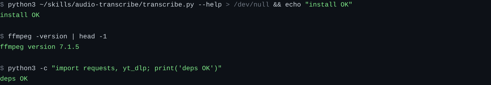
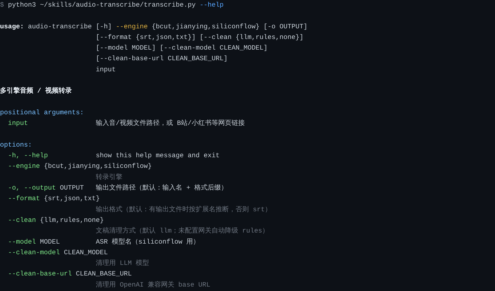
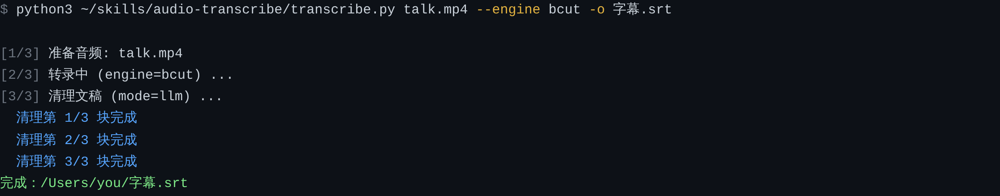
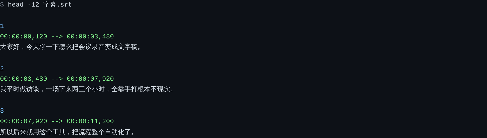
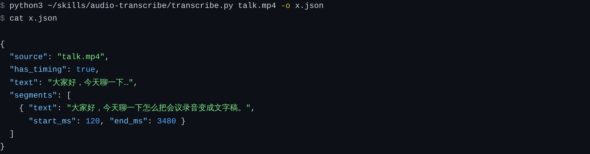
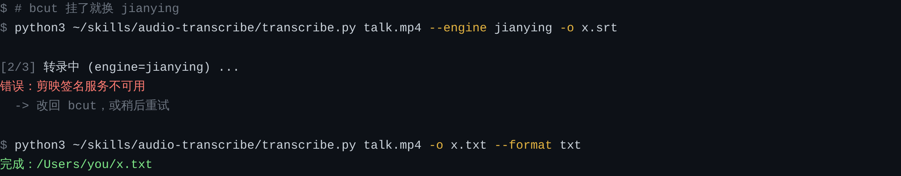
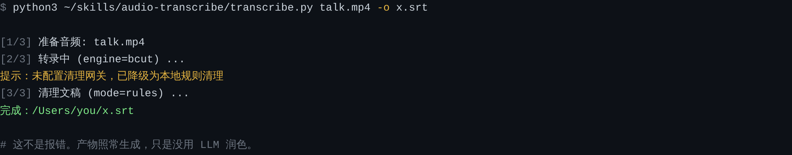
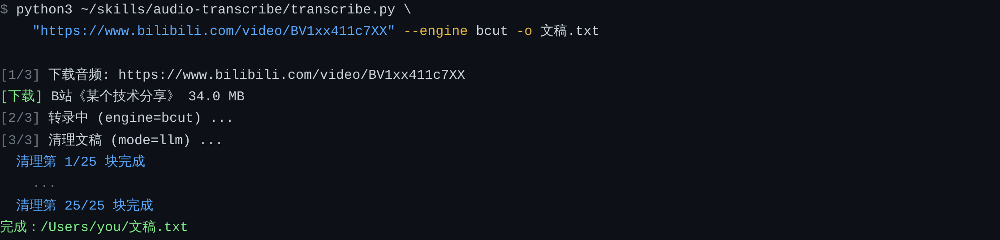

audio-transcribe 保姆级安装配置使用教程
从零开始：把音频、视频、网页链接变成带时间戳的字幕或干净文稿。每一步都有可复制命令和真实输出。
0这是什么，能帮你干什么
一句话：把「声音」变成「文字」，并且把文字打扫干净。
它解决的是这样一类重复劳动——你手上有这些东西：
- 一场两小时的会议录音
- 一个下载下来的访谈视频
- 一个 B 站 / 抖音 / 小红书的技术分享链接
你需要的是：一份能搜索、能引用、能直接贴进文档的文字稿。
它和其他转录工具有什么不一样
| 环节 | 它做了什么 |
|---|---|
| 取音频 | 本地文件用 ffmpeg 抽音轨；网页链接自动下载（B站走官方 API，其余平台走 yt-dlp） |
| 转录 | 三个免费/低价引擎可选，毫秒级时间戳 |
| 清理 | 删「嗯、啊、那个、就是」，合并「今天今天」，修同音错字，但严格保留时间轴 |
| 输出 | SRT 字幕 / TXT 文稿 / JSON 时间轴 |
它同时是两样东西：一个 普通 Python 脚本（命令行直接用），也是一个 Agent Skill（放进 agent 的 skills 目录，你只要说「把这个视频转成文字」，agent 自己就会调用）。两种用法装的是同一份代码。
整个流程长这样
输入 处理 输出 ┌──────────────┐ ┌─────────────────────────┐ ┌──────────────────┐ │ 本地音视频 │ │ ① 取音频 │ │ .srt 带时间字幕 │ │ ├ mp4/mov │─────▶│ ffmpeg / yt-dlp │─────▶│ .txt 干净文稿 │ │ ├ mp3/wav │ │ ② 云转录（免费） │ │ .json 时间轴数据 │ │ └ m4a │ │ bcut / jianying │ └──────────────────┘ │ │ │ 硅基流动 Qwen3-ASR │ │ 网页链接 │ │ ③ 文稿清理（可选） │ │ │ ├ B站 │ │ LLM 润色 或 本地正则 │ ▼ │ ├ 抖音/小红书 │ └─────────────────────────┘ stdout 只打印路径 │ ├ 快手/微博 │ 进度警告走 stderr │ └ YouTube │ └──────────────┘
脚本把最终文件路径打到 stdout，所有进度和警告走 stderr。这样你可以 OUT=$(python3 transcribe.py ...) 直接拿到产物路径，不会被日志污染。
1装之前，先检查环境
只有一个硬性前提：Python 3.10 或更新。Linux / macOS 一般自带，Windows 需要单独装。
1.1 检查 Python
# 看版本 python3 --version # 期望输出类似：Python 3.11.7 或更高
如果 python3 提示找不到命令，试 python --version。后面对所有命令里的 python3 都要换成 python 或 py。
版本低于 3.10 的话：
| 系统 | 安装命令 |
|---|---|
| macOS | brew install python@3.12 |
| Ubuntu / Debian | sudo apt update && sudo apt install python3.12 python3-pip |
| Arch | sudo pacman -S python python-pip |
| Windows | 官网下载 python.org，安装时勾选 Add to PATH |
1.2 检查 ffmpeg（必须有）
ffmpeg 负责把视频里的音轨抽出来、转成模型能吃的格式。它不是 pip 包，必须系统安装。
ffmpeg -version

没装的话：
| 系统 | 安装命令 |
|---|---|
| macOS | brew install ffmpeg |
| Ubuntu / Debian | sudo apt install ffmpeg |
| Arch | sudo pacman -S ffmpeg |
| Windows | winget install Gyan.FFmpeg |
1.3 检查 git 和 pip
git --version pip3 --version
没有 git 就直接下 ZIP（下一节会讲），没有 pip 就 sudo apt install python3-pip。
1.4 网络说明
两个引擎都不需要科学上网：
- bcut 走 B 站国内接口，无需 key，也无需代理
- jianying 走剪映接口，同样国内直连
只有转录 YouTube 链接时才需要能访问 YouTube。
2三种安装方式，选一种
装成 agent skill（推荐，一次装好长期用）
如果你用 CC / Codex / OpenCode / pi，装到对应 skills 目录，之后直接说话就行。
各家 agent 的目录对照
| Agent | 个人级安装路径 |
|---|---|
| CC (Claude Code) | ~/.claude/skills/audio-transcribe |
| Codex | ${CODEX_HOME:-~/.codex}/skills/audio-transcribe 或 ~/.agents/skills/audio-transcribe |
| OpenCode | ~/.config/opencode/skills/audio-transcribe |
| pi | ~/.pi/agent/skills/audio-transcribe |
以 CC 为例，完整三步：
# 1. 建目录并克隆 mkdir -p ~/.claude/skills git clone https://github.com/weiyinerzui/audio-transcribe ~/.claude/skills/audio-transcribe # 2. 装 Python 依赖 pip3 install -r ~/.claude/skills/audio-transcribe/requirements.txt # 3. 验证（必须真的跑一遍） python3 ~/.claude/skills/audio-transcribe/transcribe.py --help
skill 是 agent 启动时扫描的。装完必须重启 agent 或开新会话，否则它不知道有这个 skill。
github 连不上怎么办
国内直连 GitHub 经常失败。用镜像前缀就行：
# 在完整地址前面加 https://gh-proxy.com/
git clone https://gh-proxy.com/https://github.com/weiyinerzui/audio-transcribe \
~/.claude/skills/audio-transcribe或者直接用浏览器打开仓库，点 Code → Download ZIP，解压后放进 skills 目录，确认目录名就是 audio-transcribe。
只当命令行工具用（不装 agent 也能跑）
找一个你顺手的目录，克隆下来直接用。
mkdir -p ~/tools && cd ~/tools
git clone https://github.com/weiyinerzui/audio-transcribe
cd audio-transcribe
pip3 install -r requirements.txt
# 之后任何地方都能这样调用
python3 ~/tools/audio-transcribe/transcribe.py --help多个 agent 共用一份（软链接）
不想在四个目录各克隆一遍，就装一份、软链过去。
git clone https://github.com/weiyinerzui/audio-transcribe ~/skills/audio-transcribe pip3 install -r ~/skills/audio-transcribe/requirements.txt mkdir -p ~/.claude/skills ~/.agents/skills ~/.config/opencode/skills ~/.pi/agent/skills ln -s ~/skills/audio-transcribe ~/.claude/skills/audio-transcribe ln -s ~/skills/audio-transcribe ~/.agents/skills/audio-transcribe ln -s ~/skills/audio-transcribe ~/.config/opencode/skills/audio-transcribe ln -s ~/skills/audio-transcribe ~/.pi/agent/skills/audio-transcribe
Windows 上 ln -s 需要管理员权限或开发者模式，容易失败。Windows 用户建议直接用方式 A，各装一份，或者只装一个 agent。
3懒人法：让 agent 自己装
不想敲命令？把下面这段整段复制给你的 agent（CC / Codex / OpenCode / pi 都行），它会自己判断路径、装依赖、做验证。
请帮我安装并配置 audio-transcribe skill，这是一个把音频/视频转成字幕或文稿的 Agent Skill。
仓库：https://github.com/weiyinerzui/audio-transcribe
请按以下步骤执行，每步完成后告诉我结果：
1. 判断我当前用的 agent 类型，确定 skill 安装目录：
- CC：~/.claude/skills/audio-transcribe
- Codex：${CODEX_HOME:-~/.codex}/skills/audio-transcribe（也支持 ~/.agents/skills/）
- OpenCode：~/.config/opencode/skills/audio-transcribe
- pi：~/.pi/agent/skills/audio-transcribe
如果目录下已有同名 skill，先告诉我有旧版本，问我是否覆盖，不要直接覆盖。
2. 克隆仓库到该目录（不要克隆到临时目录再复制）：
git clone https://github.com/weiyinerzui/audio-transcribe <上述目录>
3. 检查并安装依赖：
- 确认 python3 版本 >= 3.10
- 确认 ffmpeg 和 ffprobe 在 PATH 中（缺失时告诉我对应平台的安装命令，不要擅自 sudo）
- 确认 yt-dlp 可用
- 执行 pip install -r <目录>/requirements.txt
4. 验证安装（必须真的跑一遍，不要只看文件是否存在）：
python3 <目录>/transcribe.py --help
然后把执行结果摘要给我。
5. 询问我要不要配置 LLM 清理网关（可选，不配也能用，会自动降级为本地正则清理）：
需要配置的话，我提供 base_url / model / api_key 后，帮我写进 shell 启动文件
（~/.bashrc 或 ~/.zshrc），变量名为：
NINEROUTER_BASE_URL / NINEROUTER_MODEL / NINEROUTER_API_KEY
注意事项：
- 安装完成后告诉我这个 skill 的绝对路径，以及怎么用它。
- 不要删除我的原始音视频文件。
- 不要把 api_key 或 Cookie 写进任何会提交到 git 的文件，也不要在回复里完整打印出来。
- 如果某一步失败，告诉我具体错误和修复建议，不要静默跳过。装好后直接说「把这个视频转成字幕：<链接>」，agent 就会自己调用。
4第一次跑通
准备一个测试文件。手边没有的话，用手机录 10 秒说话，导成 mp3 或 m4a 拉到电脑上。
4.1 先看帮助

4.2 跑第一条命令
python3 ~/tools/audio-transcribe/transcribe.py talk.mp4 \ --engine bcut \ -o 字幕.srt

--engine bcut 用免费引擎，不登录、不要 key。
-o 字幕.srt 输出到这个文件，扩展名决定格式。
前面那一长串是脚本路径，用绝对路径最稳。
4.3 打开结果

好了。到这里你已经会用 80% 了。
对比一下 --clean none 和默认的输出。前者会保留「嗯」「那个」「就是」这些，后者不会。音量词删干净了，说明清理生效了。
5看懂输出：三种格式怎么选
| 格式 | 长什么样 | 什么时候用 |
|---|---|---|
| .srt | 序号 + 时间码 + 文本 | 要放进视频剪辑软件、播放器、B站字幕、剪映 |
| .txt | 纯文字，按段落 | 要读、要贴进文档、要交给 ChatGPT 总结 |
| .json | 结构化，含毫秒级时间轴 | 要写程序处理、要做自己的应用 |
JSON 的结构

| 字段 | 含义 |
|---|---|
source | 输入文件名或链接 |
has_timing | 是否有时间戳（siliconflow 引擎为 false） |
text | 全文拼接 |
segments[] | 逐段：text / start_ms / end_ms |
-o a.srt 就是 SRT，-o a.txt 就是 TXT，不用额外写 --format。
写了 --format 则以它为准。
6三个引擎怎么选
| 引擎 | 要 key 吗 | 时间戳 | 推荐场景 |
|---|---|---|---|
| bcut | ❌ 不要 | ✅ 毫秒级 | 默认首选。B 站必剪接口，免费稳定 |
| jianying | ❌ 不要 | ✅ 毫秒级 | bcut 失败时备选。依赖第三方签名，可能失效 |
| siliconflow | ✅ 要 | ❌ 无 | 只要纯文稿。Qwen3-ASR，中文效果不错 |
默认就用 bcut
99% 的情况 --engine bcut 就够了：免费、不要注册、有精确时间戳、中文识别准。
bcut 挂了怎么办

顺序建议：
- 先重试一次
bcut（往往是瞬时网络问题） - 再试
--engine jianying - 都不行，用
--engine siliconflow（需要SILICONFLOW_API_KEY）
siliconflow 需要 key
# 去 https://cloud.siliconflow.cn 注册拿 key export SILICONFLOW_API_KEY="sk-xxxxxxxx" python3 transcribe.py talk.mp4 --engine siliconflow -o 文稿.txt
它只返回整段文本，所以做不了 SRT。如果你要 -o x.srt，它会自动降级成 txt 并提示你。
7文稿清理：三种模式
转录出来的原始文字是「毛坯」——有「嗯」「啊」「那个」「就是」，有「今天今天」这种重复，有同音错字。清理就是给毛坯做装修。
| 模式 | 联网 | 质量 | 什么时候用 |
|---|---|---|---|
--clean llm（默认） | 是 | 最好 | 默认用这个。能跨句纠错、理解上下文 |
--clean rules | 否 | 够用 | 不想联网、不想把内容发给任何第三方 |
--clean none | 否 | 原始 | 要对照、要做研究、怀疑清理改错了原意 |
清理到底改了什么
| 类型 | 处理 |
|---|---|
| 语气词 | 删除「嗯 / 啊 / 那个 / 就是 / 对吧 / 这个这个」 |
| 重复卡顿 | 「今天今天我们」→「今天我们」 |
| 同音错字 | 按上下文修正明显识别错误 |
| 时间轴 | 完整保留。只删语气词所在的段，不重排时间 |
| 原意 | 绝不改写、不总结、不翻译 |
这是最容易误判的地方。如果 --clean llm 因为网络或没配网关失败，它会自动降级成 rules，产物照常生成，只是没用 LLM 润色。

8配置 LLM 网关（可选但强烈建议）
这一步决定清理质量。不配也能用，配了效果明显更好。
8.1 支持的网关
任何 OpenAI 兼容接口都行：
- DeepSeek 官方 API
- OpenAI 官方
- 硅基流动
- 本地 Ollama
- one-api / new-api 自建网关
- 公司的内部网关
8.2 三个环境变量
export NINEROUTER_BASE_URL="https://api.deepseek.com/v1" export NINEROUTER_MODEL="deepseek-chat" export NINEROUTER_API_KEY="sk-你的key"
历史原因。它的语义就是「清理用的 LLM 网关」，跟具体服务商无关。填 DeepSeek、OpenAI、Ollama 都可以。
8.3 让变量永久生效
只在终端 export 一次，关掉窗口就没了。写进 shell 启动文件才持久：
# macOS 默认 zsh cat >> ~/.zshrc <<'EOF' export NINEROUTER_BASE_URL="https://api.deepseek.com/v1" export NINEROUTER_MODEL="deepseek-chat" export NINEROUTER_API_KEY="sk-你的key" EOF source ~/.zshrc # Linux 一般是 bash cat >> ~/.bashrc <<'EOF' export NINEROUTER_BASE_URL="https://api.deepseek.com/v1" export NINEROUTER_MODEL="deepseek-chat" export NINEROUTER_API_KEY="sk-你的key" EOF source ~/.bashrc
API key 等同于钱包。不要提交到 git，不要贴在公开聊天里，不要在截图里露出。写进 ~/.zshrc 是可以的（本机私有文件）。
8.4 不写环境变量，直接传参数
适合临时用一次，或不想改 shell 配置：
python3 transcribe.py talk.mp4 -o x.srt \ --clean-base-url "https://api.deepseek.com/v1" \ --clean-model "deepseek-chat"
8.5 agent 用户特别注意
如果你在 CC / Codex 里用这个 skill，而你只在普通终端 export 过，agent 可能读不到——它有自己的环境。
解决办法：把变量写进 ~/.zshrc / ~/.bashrc 后重启 agent；或者写进 agent 自己的配置里。
读不到时不会报错，只会静默降级成 rules。
8.6 长音频稳定性（不用你操心）
1 小时以上的音频，清理环节容易因为模型慢而超时。这个已经被专门修过了：
| 机制 | 作用 |
|---|---|
| 流式请求 | 超时判定的是「相邻数据块间隔」（默认 120s），不是整段生成总时长 |
| 小分块 | 默认 1200 字/块，在段落 → 行 → 句子边界切，不切断语义 |
| 分块级容错 | 单块失败只保留该块原文，其他块照常；全部失败才降级 rules |
| 预算递增 | 输出被截断时自动加大 max_tokens 重试 |
实测 1 小时视频（2.9 万字，切成 25 块）：全部成功、零降级、零乱码。
想微调（一般不用动）：
| 变量 | 默认 | 作用 |
|---|---|---|
NINEROUTER_CLEAN_CHUNK | 1200 | 每块字符上限，越小越稳 |
NINEROUTER_CLEAN_BATCH | 30 | 带时间戳时每批字幕段数 |
NINEROUTER_CLEAN_READ_TIMEOUT | 120 | 流式相邻数据块间隔超时（秒） |
9转录网页链接
直接把链接当输入，不需要先下载视频。
python3 ~/tools/audio-transcribe/transcribe.py \ "https://www.bilibili.com/video/BV1xx411c7XX" \ --engine bcut -o 文稿.txt

支持的平台
| 平台 | 要 Cookie | 说明 |
|---|---|---|
| B 站 / b23.tv | ❌ 不要 | 开箱即用，支持分P（?p=3） |
| 微博 | ❌ 一般不要 | 走 yt-dlp |
| YouTube | ❌ | 需能访问 YouTube |
| 抖音 | ⚠️ 建议 | 部分视频需要新鲜 Cookie |
| 小红书 | ✅ 必须 | 且只有视频笔记才能下 |
| 快手 | ✅ 必须 | — |
| 微信视频号 | — | 不支持，需先拿直链 |
分P 怎么指定
# 第 3 个分P
python3 transcribe.py "https://www.bilibili.com/video/BV1xx411c7XX?p=3" --engine bcut -o p3.srt10平台 Cookie 怎么配
只有小红书、快手必须配，抖音建议配。
10.1 拿到 Cookie
- Chrome 打开目标网站，登录
- 按
F12打开开发者工具 - 切到 Network（网络）标签
- 刷新页面，点任意一个请求
- 在 Request Headers 里找到
Cookie:，复制整行的值
10.2 设置环境变量
export XHS_COOKIE="a1=...; web_session=..." export DOUYIN_COOKIE="ttwid=...; odin_tt=..." export KUAISHOU_COOKIE="kuaishou.la_gk=..." python3 transcribe.py "https://www.xiaohongshu.com/explore/xxxx" --engine bcut -o 笔记.txt
拿到 Cookie 就能以你的身份操作账号。绝不要提交进 git、贴给别人、或放进截图。
本工具只通过环境变量读取，不接受文件传入，就是为了避免误提交。
10.3 Cookie 失效的表现
抖音常见报错：Fresh cookies are needed。意思是 Cookie 过期了，重新登录再复制一次即可。
11参数全表
| 参数 | 必填 | 说明 |
|---|---|---|
input | 是 | 本地文件路径，或网页链接 |
--engine | 是 | bcut / jianying / siliconflow |
-o, --output | 否 | 输出路径，扩展名决定格式 |
--format | 否 | srt / json / txt，覆盖扩展名推断 |
--clean | 否 | llm（默认）/ rules / none |
--model | 否 | ASR 模型名，仅 siliconflow 用 |
--clean-model | 否 | 清理用 LLM 模型名 |
--clean-base-url | 否 | 清理网关地址，覆盖环境变量 |
环境变量全表
| 变量 | 用途 | 必需性 |
|---|---|---|
SILICONFLOW_API_KEY | 硅基流动转录 | 仅用该引擎时 |
NINEROUTER_BASE_URL | 清理网关地址 | 想用 LLM 清理时 |
NINEROUTER_MODEL | 清理模型名 | 想用 LLM 清理时 |
NINEROUTER_API_KEY | 清理网关密钥 | 想用 LLM 清理时 |
XHS_COOKIE | 小红书 Cookie | 小红书链接 |
DOUYIN_COOKIE | 抖音 Cookie | 抖音链接建议 |
KUAISHOU_COOKIE | 快手 Cookie | 快手链接 |
常用组合速查
# 1. 视频 → 字幕（最常用，免费） python3 transcribe.py 视频.mp4 --engine bcut -o 字幕.srt # 2. 视频 → 纯文稿 python3 transcribe.py 视频.mp4 --engine bcut --format txt -o 文稿.txt # 3. 完全离线，不联网 python3 transcribe.py 视频.mp4 --engine bcut --clean rules -o 字幕.srt # 4. B站链接 → 文稿 python3 transcribe.py "https://www.bilibili.com/video/BVxxx" --engine bcut -o 文稿.txt # 5. 只要原始识别结果 python3 transcribe.py 视频.mp4 --engine bcut --clean none -o 原文.srt # 6. 结构化数据 python3 transcribe.py 视频.mp4 --engine bcut -o data.json # 7. 只拿产物路径（脚本里用） OUT=$(python3 transcribe.py 视频.mp4 --engine bcut -o x.srt 2>/dev/null) echo "产物在: $OUT"
12在 agent 里怎么用
装成 skill 之后，你不需要记命令，直接说话。
12.1 怎么触发
| 你说 | agent 会做 |
|---|---|
| 「把这个视频转成字幕：<路径>」 | 调用 bcut 引擎输出 SRT |
| 「这段录音帮我整理成文字稿」 | 输出 TXT，默认 LLM 清理 |
| 「转录这个 B 站视频：<链接>」 | 下载 + 转录 + 清理 |
| 「把会议录音里的废话去掉」 | 转录 + LLM 清理 |
| 「这个视频讲了什么」 | 转录后直接总结 |
12.2 建议的对话方式
帮我转录这个视频，输出带时间戳的字幕： /Users/me/Downloads/访谈.mp4 如果清理网关没配置，就直接用本地规则清理，别因为清理失败就报错。
12.3 你要提醒 agent 的三件事
让它调用 <skill目录>/transcribe.py 的绝对路径，而不是假设它在当前目录。
明确告诉它：降级到 rules 是正常兜底，产物有效。否则有些 agent 会误判为失败并重跑。
1 小时音频全程 30–45 分钟。告诉它「慢慢跑，别中断」。
12.4 不触发怎么办
- 确认目录名是
audio-transcribe - 确认
SKILL.md就在目录里面（不要变成SKILL.md.txt） - 重启 agent —— skill 是启动时扫描的
- 还是不行就直接点名：「用 audio-transcribe 这个 skill 转录这个文件」
13常见问题
Q：报错 ffmpeg not found
ffmpeg 没装或不在 PATH。按第 1.2 节装一下，装完 重开终端。
Q：转录出来的全是乱码
旧版本 bug，v1.1.0 已修（流式响应没指定 UTF-8 解码）。升级到最新版：
cd ~/.claude/skills/audio-transcribe && git pull
Q：清理没生效，文稿里还有「嗯」「啊」
三种可能：
- 没配
NINEROUTER_*，静默降级成 rules 了（rules 只能删明显语气词） - 配了但 agent 进程读不到 —— 重启 agent
- 确实用了
--clean none
排查：跑一次看 stderr 有没有「已降级」字样。
Q：siliconflow 出不了 SRT
设计如此。该引擎不返回时间戳。要 SRT 就换 bcut。
Q：jianying 报签名错误
它依赖第三方签名服务，会失效，不受本工具控制。换 bcut。
Q：B 站链接下载失败
先升级 yt-dlp：
pip3 install -U yt-dlp
B 站有专门的官方 API 通道，一般比 yt-dlp 更稳。如果仍然失败，确认链接是完整地址（不是只有 BV 号）。
Q：跑到一半「像卡住了」
正常。看 stderr 的「清理第 N/M 块完成」，只要数字在涨就是在跑。1 小时音频要 30–45 分钟。
Q：能转录英文吗
能。bcut 对英文识别可用，实测英文技术演讲效果良好。清理阶段会保持原语言，不翻译。
Q：能转录方言吗
普通话效果最好。粤语、四川话等有一定支持但不保证。方言重建议用语料更多的商业 API。
Q：会不会把我的录音传到什么地方
转录必须上传音频到 bcut / jianying / siliconflow 的接口，这是云转录的固有代价。清理环节：
--clean rules和none：完全本地，不联网--clean llm：把文字发到你配置的网关
涉密内容请用 --clean rules，并注意转录本身仍需上传音频。
Q：Windows 能用吗
能。注意三点：命令里的 python3 换成 python；路径用引号包起来；软链接方式不建议用。
14卸载 / 升级 / 换版本
升级到最新版
cd ~/.claude/skills/audio-transcribe
git pull
pip3 install -r requirements.txt --upgrade
# 重启 agent卸载
rm -rf ~/.claude/skills/audio-transcribe
# 顺便清掉 shell 里的环境变量（可选）查看当前版本
cd ~/.claude/skills/audio-transcribe git log --oneline -1 git tag --points-at HEAD
版本历史
| 版本 | 变化 |
|---|---|
| v1.2.0 | SKILL.md 精简重构（6.4K → 3.0K 字符），拆出 references/ 按需加载；README 加 agent 自动安装 Prompt |
| v1.1.0 | 长音频清理不再超时降级：流式请求 + 小分块 + 分块级容错 + 预算递增；修复中文乱码 |
| v1.0.0 | 首个公开版 |
✓15 分钟速通清单
如果你只想最快跑起来，照这个顺序做，别管其他：
确认 python3 和 ffmpeg
python3 --version && ffmpeg -version | head -1
克隆 + 装依赖
mkdir -p ~/.claude/skills git clone https://github.com/weiyinerzui/audio-transcribe ~/.claude/skills/audio-transcribe pip3 install -r ~/.claude/skills/audio-transcribe/requirements.txt
跑通第一条
python3 ~/.claude/skills/audio-transcribe/transcribe.py 你的文件.mp4 \ --engine bcut -o 字幕.srt
（可选）配 LLM 网关提升清理质量
echo 'export NINEROUTER_BASE_URL="https://api.deepseek.com/v1"' >> ~/.zshrc echo 'export NINEROUTER_MODEL="deepseek-chat"' >> ~/.zshrc echo 'export NINEROUTER_API_KEY="sk-你的key"' >> ~/.zshrc source ~/.zshrc
仓库：github.com/weiyinerzui/audio-transcribe · 协议 MIT · 转录协议移植自 VideoCaptioner